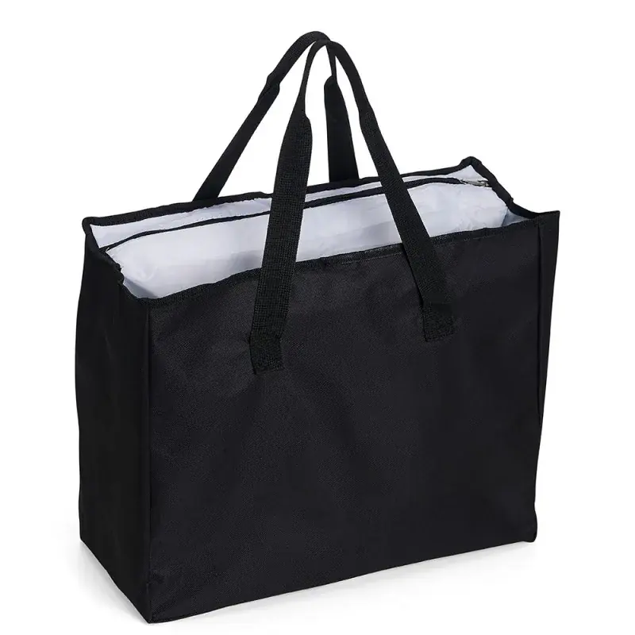

A bolsa térmica personalizada é um daqueles produtos que atendem públicos muito diferentes com a mesma estrutura: serve de brinde corporativo, de item de marca própria, de kit de delivery e de acessório do dia a dia de quem leva marmita para o trabalho. Este guia explica como ela funciona de verdade, quais materiais importam, que tamanho escolher e o que observar antes de fechar um pedido.
Como uma bolsa térmica realmente funciona
Muita gente acha que a bolsa térmica "esfria" ou "esquenta" o conteúdo. Não é isso. Ela retarda a troca de temperatura com o ambiente — conserva o que já está frio ou quente por mais tempo. Quem faz esse trabalho é a combinação de três camadas: o tecido externo, a manta isolante no meio e o forro interno.
Isso tem uma consequência prática importante: a bolsa mantém melhor o que entra na temperatura certa. Colocar comida morna e esperar que ela esfrie não funciona — e nenhuma bolsa térmica do mercado faz isso.
As camadas que definem a qualidade
- Tecido externo — normalmente nylon, poliéster ou oxford. É o que dá resistência e recebe a personalização da marca;
- Manta isolante — a camada intermediária, geralmente em manta térmica aluminizada ou espuma. É aqui que a bolsa se define: quanto melhor a manta, maior a retenção de temperatura;
- Forro interno — costuma ser PEVA ou material aluminizado. Precisa ser impermeável e fácil de limpar, porque é ele que recebe respingo e condensação.
Se você for comparar propostas de fornecedores, compare a manta e o forro — não só o preço. Duas bolsas visualmente idênticas podem ter desempenhos bem diferentes.
Tamanhos: escolha pelo uso, não pelo palpite
- Compacta (marmita individual) — cabe um pote e uma garrafa. É a mais vendida como brinde corporativo, porque atende a maioria sem encarecer o lote;
- Média (tote térmica) — formato de sacola, comporta compras, lanche de família ou o almoço de dois. Tem excelente área para marca;
- Grande (bag de entrega) — para delivery, feira e transporte de volume. Costuma ter reforço estrutural e alça mais robusta;
- Bolsa de praia / cooler — variação sazonal, com foco em bebidas e uso ao ar livre.
Um teste simples resolve a dúvida: liste os objetos que a bolsa sempre vai carregar e dimensione a partir deles. A peça piloto existe justamente para validar isso antes do lote.
Para quem a bolsa térmica funciona bem
Como brinde corporativo, ela tem uma vantagem rara: é usada quase todo dia útil por quem leva almoço para o trabalho. Poucos brindes têm essa frequência de uso — e cada uso é exposição da marca no ambiente profissional.
Como produto de marca própria, ela atende os nichos de fitness, alimentação saudável, meal prep e lifestyle, públicos que costumam valorizar bem o item e aceitam pagar por qualidade.
Para delivery e food service, a bag térmica com a marca do restaurante funciona como mídia móvel na rua, além de ser exigência operacional.
Personalização: onde a marca aparece
A face externa da bolsa térmica é ampla e sem recortes, o que facilita bastante a aplicação da marca:
- Silk screen — melhor custo em volume, ideal para logos de poucas cores;
- Sublimação — estampa colorida por toda a peça, exige tecido claro de poliéster;
- Bordado — maior percepção de valor, indicado para linhas premium;
- Etiqueta tecida e puxador personalizado — detalhes que elevam a peça de brinde genérico a produto de marca.
O que checar antes de fechar o pedido
Três pontos separam uma bolsa térmica boa de uma que vira reclamação:
- Costura das laterais e da base — é onde o peso concentra. Costura reforçada evita o rasgo mais comum;
- Zíper — o item que mais falha em bolsa térmica, porque é aberto e fechado várias vezes ao dia;
- Limpeza do forro — o forro precisa ser liso e impermeável. Forro que absorve líquido gera cheiro e inviabiliza o uso em poucas semanas.
Quantidade, prazo e próximos passos
Produzimos bolsas térmicas personalizadas a partir de 20 unidades por modelo, com peça piloto aprovada antes do lote e prazo de até 25 dias úteis. Como em qualquer produção sob encomenda, o custo unitário cai conforme o volume sobe.
Veja a linha completa em bolsas térmicas personalizadas, ou conheça a linha de brindes corporativos se a ideia for montar um kit. Para quem leva marmita e treino no mesmo dia, a bolsa fitness costuma ser o complemento natural.
Perguntas frequentes
Por quanto tempo a bolsa térmica conserva a temperatura?
Depende da qualidade da manta isolante, do tamanho da bolsa e da temperatura inicial do conteúdo. A bolsa não esfria nem esquenta: ela retarda a troca de temperatura com o ambiente, conservando por mais tempo o que já entrou frio ou quente.
Qual o pedido mínimo de bolsa térmica personalizada?
O pedido mínimo é de 20 unidades por modelo, com peça piloto aprovada antes da produção do lote. O custo por peça diminui conforme a quantidade aumenta.
Qual material é usado no forro?
O forro interno costuma ser em PEVA ou material aluminizado, sempre impermeável e de fácil limpeza, já que recebe respingos e condensação. Entre o forro e o tecido externo fica a manta isolante, que é o que define o desempenho térmico.
Dá para colocar a marca da minha empresa?
Sim. A face externa é ampla e sem recortes, o que facilita a aplicação em silk screen, sublimação ou bordado. Também é possível personalizar etiqueta e puxador na cor da marca.
Qual tamanho escolher para brinde corporativo?
A compacta, para uma marmita e uma garrafa, é a mais usada em brindes porque atende a maioria das pessoas sem encarecer o lote. Modelos maiores fazem sentido quando o público leva compras ou refeições para mais de uma pessoa.
Quer produzir bolsas térmicas com a sua marca?
Fabricação B2B a partir de 20 unidades, com peça piloto antes do lote e entrega em até 25 dias úteis. Fale direto com nosso comercial.
Solicitar orçamento